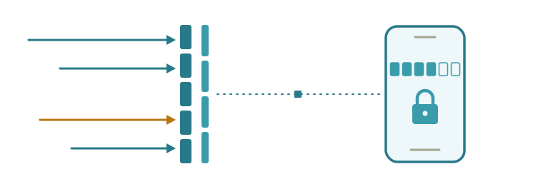
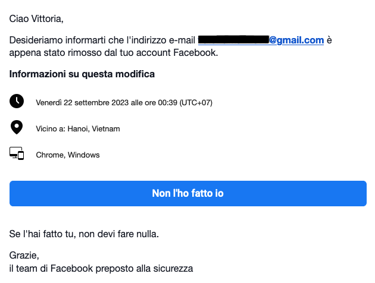
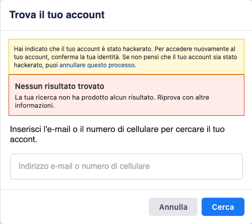

Theft and recovery of a Facebook account¶

This is the story of Vittoria (a pseudonym, henceforth referred to as V). A few days ago, V called me in an emergency: her Facebook account had been stolen by Nhang (a pseudonym, henceforth referred to as N). Identity theft is a criminal offense, sanctioned by Article 494 of the Penal Code. This information will be useful later on.

For those who use Facebook for their work, such an event is extremely traumatic and must be handled with all due caution.
The Facts¶
- Wednesday, V receives notifications on Facebook warning her of abnormal activity on her account. V followed the instructions by reporting the suspicious activity, but being on a mobile device, she was unable to change the password or activate multi-factor authentication.
- Thursday, 7:37 PM: Verify your payment method to resume posting ads (Attachment 1).
- Thursday, 7:39 PM: Have you just added an email address? (Attachment 2).
- Friday, 12:38 AM: Have you just removed your phone number? (Attachment 3).
- Friday, 12:39 AM: Have you just removed your email address? (Attachment 4).


From this point on, V can no longer access her account either from her computer or her phone. Additionally, V notices that the account now displays the name and surname of N.
We can imagine what happened:
- V's password was stolen. This action is possible through numerous techniques ranging from simple phishing portals, the use of more or less public data breaches, to the use of so-called Infostealers.
- V's account was not protected with multi-factor authentication (MFA).
- N was able to access V's account and, by changing the password, email, and phone number, locked out V.
Facebook's First Failure¶
For those working in the field of cybersecurity, these types of events represent a series of indicators that, given V's typical behavior, indicate a compromise (commonly referred to as Behavioral Indicators of Compromise or BIoC). Trying to describe the mechanism simply, each event receives a score, and the group of events is evaluated not individually, but based on the group score.
Specifically:
- If an Italian profile, with accesses only from Italy, is accessed from Vietnam, the event is highly suspicious and we assign it a score of 9/10.
- If a user changes their account password and has never done so before, the event may be suspicious and we assign it a score of 1/10.
- If a user replaces an email, the event may be suspicious and we assign it a score of 6/10.
- If a user removes or replaces their phone number, the event may be suspicious and we assign it a score of 6/10.
- If a user replaces their profile's name and surname in a radically different way, the event is highly suspicious and we assign it a score of 9/10.
It doesn't take a security expert to understand that these 5 events, taken together, conclusively determine a compromise of the account.
Facebook's First Attempt and Failure¶
For each event described in the facts paragraph, Facebook sent V an email: by clicking on the "Not me" link, a procedure was triggered that should have allowed V to undo the actions and regain control of her account.
But it didn't go that way.
V had to send Facebook, via webcam, a live recording of her identity document. But Facebook's automatic system deemed the information insufficient to recognize V and restore her account access, leaving it with N.
Again, it doesn't take a security expert to understand that if V uses an official Facebook email to report fraudulent activity, it is highly likely that the event was indeed fraudulent, and the account modification actions should be reversed.
Account Recovery and Facebook's Failure¶
V had two more Facebook emails with links to attempt account recovery. Another attempt failed, but with some difficulty, V managed to activate the third recovery procedure. V now chooses to use not the identity document that always appeared blurred, but the passport: she takes the time to take a good photo of the document with her phone, and this time Facebook recognizes V's identity and sends her two emails for recovery:
- New email address added to Facebook (Attachment 5).
- You can now access your account again (Attachment 6.


These two emails should be used in the exact order described above: first, the email address must be confirmed with the corresponding confirmation code, then access to the account can be regained with the temporary password and PIN provided in the email.
But it's not over yet.
V manages to access the account, but the email change procedure fails. So, she finds an account:
- for which she does not know the password (the one in the email is a temporary password to be used once);
- associated with N's email;
- associated with N's phone number.
V soon realizes that any attempt to change the password, replace the email, or phone number requires a password, but not the one she possesses; the password requested is the one used by N to lock V out.
However, there is a procedure to proceed even without knowing the password, but it requires a confirmation PIN, sent to N's email or phone.

In a moment of desperation and intuition at the same time, V tries again to open the Facebook app from her phone, which automatically logs into Facebook but requires confirmation from an already open session. Now V can authorize access from the phone using the previously opened session on the computer, and in no time, V manages to change the email, phone number, and set up multi-factor authentication.
But V cannot change the name and surname for two months: it's a Facebook security policy. V will be presented to her friends as Nhang for two months.
Other Facebook Failures¶
In retrospect, I can say that V, despite claiming to have difficulty with technology, reacted well: she had a good degree of autonomy, had excellent insights, and did not get discouraged. And yes, considering how Facebook's security systems don't work, she was also very lucky.
So let's see the other failures of Facebook:
- There is an official procedure by Facebook for recovering stolen accounts: however, it requires entering the email address or phone number associated with the stolen account. Since they were changed by N, V did not know them.
- Sending the document is done through Facebook: for some reason, the ID document capture was blurred, despite V having a latest-generation phone. Capturing the passport, much larger than the electronic identity card, was a brilliant intuition by V.
Criminal Offense¶
Identity theft is a criminal offense that should be reported. Not so much because there is hope that Italian authorities can act on Facebook, but because the stolen profile could be used for crimes. It is therefore necessary to be able to demonstrate that one is no longer in possession of that account from a specific date.
V went to the authorities to report the incident, but she was unable to assert her rights.
Lesson Learned¶
Lately, I have often dealt with what I call the technofascism of social platforms, where a series of poorly written automatisms and a strong interest in surveillance arbitrarily or causally erase people's rights.
However, I understand that some people choose to use such platforms for specific reasons. And to these people, I appeal to prevent potential scams.
In my approach to digital security, there are two types of accounts:
- those linked to my identity that must be protected with secure, unique passwords, and, where possible, multi-factor authentication;
- disposable accounts, not linked to my personal identity, which I protect with fictitious data, secure passwords, and, where possible, multi-factor authentication.
It is said that prevention is better than cure, and in these cases, it is truer than ever: as evidenced by this article, recovering a stolen account is a mix of stubbornness and luck. To be extremely transparent: few accounts are recovered.
In summary, if your account is stolen:
- seek help;
- do not act in an emergency, take the time to act correctly (for us, it was essential to operate from a computer while keeping the phone as a support);
- use the recovery emails sent by the platform;
- once access is recovered, cut off your attacker ask for advice;
- if possible, use the official procedure, activating it daily and, if necessary, for months.
An Open Question¶
There was an open question that initially was not clear: what sense does it make to steal a Facebook account, change its name without asking for a ransom? In other words: where is the economic benefit in doing this type of operation?
The answer came a few days later: the criminal had used the Facebook account to add a credit card, unknown to V and probably stolen, to create and pay for promotional campaigns.